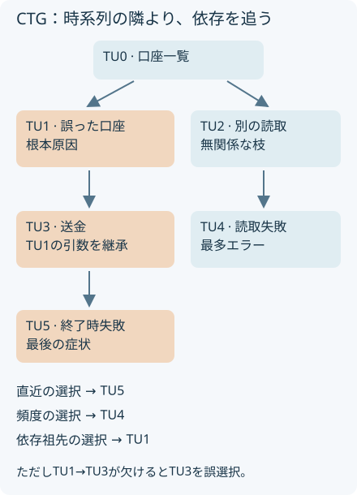
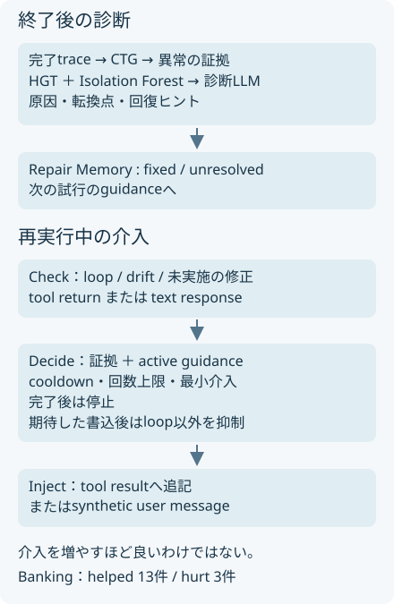

概要
AgentTetherは凍結したエージェントの外側で、終了後の原因診断と再実行中の介入を分ける。τ-bench Bankingの初回失敗83件では、診断のみの39件から介入つき49件へ修復が増えた。一方で介入により失敗へ転じた例もある。
問題設定
誤った口座を選んだあと、そのIDを送金処理が引き継いで最後に失敗する場合、最後のエラーだけを直しても原因は残る。注意も長くは続かない。原典はこの二つを、終了後の診断と実行中の監督に分ける。
核心
著者の主張 · 論文に書かれていること
著者は実行をTransition Unitsへ整理し、Critical Transition Graphで疑わしい依存経路を絞る。診断をRepair Memoryに残し、再実行中はCheck→Decide→Injectで逸脱を補正する。モデルと環境を変更せず、最大3回の修復を評価する（§III–IV）。
解釈・批評 · 読書メモ
診断だけでは足りない。修正を守り続ける能力も測りたい。共有artifactやerror signatureに基づくグラフは診断の手掛かりにはなるが、因果関係の証明ではない。特に書き込み後のhookでは、すでに起きた副作用を取り消せない。
最後の失敗から、引き継がれた引数をたどる
{kind=link}

モデル / 手法
TUは一回の判断と、その結果を結ぶ
TU_k = (o_k, b_k, a_k, f_k)
oは観測、bはbeliefとしての推論、aはツール名と引数または応答、fは実行feedbackである。SDKへのbefore/after hookから取得したtraceを、この単位へまとめる。Critical Transition Graph（CTG）は実行順の辺と、共有artifactやerror signatureに基づく依存の辺を持つ。直前のTUだけが原因候補になる構造ではない（§III-B–C）。
学習済みの正常像と、実行内の外れ値を併用する
正常像を先に学ぶ。Heterogeneous Graph Transformer（HGT）は外部の成功軌跡21,143件から、TUとその周囲のspan、metric、log、verificationなどを型つきノードとして読み、telemetryの辺の復元と、隠されたtoolやstatusなどの属性予測を通じて正常な関係を学習する。推論時にはその二種類のsurpriseを平均し、scoreの最大の落差で異常候補を切る。τ-benchの履歴を学習する設定ではなく、外部の成功軌跡を用いる。
実行内の外れ値も探す。Isolation Forestには、TUの入出次数などの構造、実行状態とfeedbackの不整合、同じ部分目標やツール群を共有する連続区間のエラー比率など、一つの実行から抽出した25次元の特徴を渡す。二つの検出結果は別の証拠面として保持し、その和集合を局所的な証拠へ絞る。診断LLMは依存を逆にたどり、根本原因、回復可能な経路から外れた転換点、回復のヒントを返す。
実験設定はHGT hidden dimension 52、20 epochs、batch 128、Isolation Forest 100 trees、最大sample 256。補助の診断・検証・評価役はDeepSeek-V4-Proに固定し、修復されるエージェントと分ける。モデル名と設定は原典§IV-Aの記載であり、本LabはAPIを呼ばない。
診断を、その場で使える小さな修正へ変える
Repair Memoryはfixed/unresolvedを次の試行へ運ぶ。指示は失敗した操作の種類や制約を示すが、正解の引数をそのまま渡す設計ではない。初回は観察だけ。失敗してから修復へ入る。
| 段階 | 判断すること |
|---|---|
| Check | 同じ呼び出しの反復、意図からの逸脱、期待する修正の未実施、忘れた指示 |
| Decide | 証拠とactive guidanceがあるか、cooldownや回数上限に触れないか、最小の介入か |
| Inject | tool resultへ追記するか、text responseに対してsynthetic user messageを入れて再開するか |
意図逸脱はembeddingの非類似度で測り、破壊的操作は閾値0.35、通常0.50、情報取得0.55。高リスク候補はLLM verifierが確認する。tool-return側では5stepの指数移動平均（α=0.3）を使う。修正完了後は介入を止め、期待した状態変更の後はloop以外の介入を抑える。これらは誤検出の被害を抑える規則であり、成功の保証ではない（§III-D、§IV-A）。
REVISEとは、回復のきっかけと根拠が違う
REVISE Labは実行途中の指示変更を受け、どの計算結果が最新版でも有効かを追う。AgentTetherは失敗した行動を診断し、次の試行での逸脱を抑える。前者の再利用に必要な妥当性証拠と、後者のLLMを含む診断の確からしさは同じ保証ではない。この対比はresearch_botの整理で、両手法の直接比較実験はない。
診断は次の試行へ、介入は証拠のある場面へ
{kind=link}

なぜ効きそうか
解釈・推論
依存をたどれば、エラーが多い場所とエラーの出発点を分けられる可能性がある。解決済みの制約を記憶し、未解決のものだけを確認すれば、同じ修正を繰り返す負担も減らせる。ただし診断役と検証役の誤りは残り、介入が正しい行動を妨げる場合もある。
根拠
修復率の分母は初回に失敗したタスク
原典はQwen3.7-maxでRetail、Airline、Bankingの計261タスクを実行し、初回失敗123件を修復対象にする。Bankingは97件中83件が対象。最大3回の追加実行を許す。以下はTable Iの著者報告。
| Bankingの方法 | 修復数 / 83 | 修復率 | 平均時間 |
|---|---|---|---|
| Blind retry | 22 | 26.51% | 21.38分 |
| Reflexion | 22 | 26.51% | 19.36分 |
| Post-run only | 39 | 46.99% | 17.88分 |
| AgentTether | 49 | 59.04% | 20.88分 |
全領域では85/123=69.11%。これは全タスク成功率ではない。GPT-5.4 Bankingでも初回失敗86件中56件、65.12%を修復したが、失敗集合はモデルごとに違う。基盤モデルの順位比較には使えない。
介入の純増10件の裏に、悪化3件がある
Bankingでは介入ありだけが成功した13件、診断のみが成功した3件で、差は10件。対応ありのMcNemar検定はp=0.021。Retailは純増1件、Airlineは純増0件である（Table III）。Bankingの改善13件に限る平均介入回数は11.3回、悪化3件では29.3回。これは選ばれた事例の集計で、production fleetの介入率ではない。
診断のみの再実行173件では、指示への最初の違反を数える生存曲線が全体で13step時点に50%を下回り、Bankingでは8stepで下回る（Figure 3）。毎stepの独立した遵守率とは異なる。診断位置の中央値誤差は5.5 TU、Recencyは6.0、Frequencyは10.0（§IV-B）。グラフが真の原因を常に特定できたわけではない。一次資料：§II、§IV、Tables I–III。
実行可能な理解
uv run papers/agenttether-repair/run.py
6個のTUに既知の依存を置き、TU1の誤った引数がTU3を経てTU5の失敗になる。無関係な枝にはエラーを多く置く。直近、頻度、依存祖先をたどる方法を比較する。別の例では指示状態を毎step0.82倍に減衰させ、閾値0.55を下回ると最短3step間隔で戻す。
このLabは run.py 単体で実行できます。結果はコードと同じフォルダーに保存されます。
結果
生の results.json
{
"kind": "synthetic mechanism illustration",
"seed": "deterministic",
"localization": {
"true_root": 1,
"recency": 5,
"frequency": 4,
"dependency": 1,
"missing_edge_counterexample": 3
},
"adherence_proxy": {
"one_shot": {
"mean_guidance_state": 0.28822773388880474,
"fires": [],
"trace": [
0.82,
0.6723999999999999,
0.5513679999999999,
0.4521217599999999,
0.37073984319999986,
0.3040066714239999,
0.2492854705676799,
0.2044140858654975,
0.16761955040970794,
0.1374480313359605,
0.1127073856954876,
0.09242005627029982,
0.07578444614164585,
0.062143245836149594,
0.05095746158564266
]
},
"checkpoints": {
"mean_guidance_state": 0.7450047999999999,
"fires": [
4,
8,
12
],
"trace": [
0.82,
0.6723999999999999,
0.5513679999999999,
1.0,
0.82,
0.6723999999999999,
0.5513679999999999,
1.0,
0.82,
0.6723999999999999,
0.5513679999999999,
1.0,
0.82,
0.6723999999999999,
0.5513679999999999
]
}
},
"guards": {
"no_evidence": false,
"cooldown": false,
"complete": false,
"after_write": false,
"loop_after_write": true
},
"not_tested": [
"HGT",
"Isolation Forest",
"LLM analyst/verifier",
"tau-bench repair",
"production interventions"
]
}直近はTU5、頻度はTU4、依存をたどる方法は真の原因TU1を選ぶ。TU1→TU3の辺を欠落させるとTU3を誤選択する。checkpointは合成の指示状態を維持するが、原典のfirst-violation生存曲線とは異なる量である。すでに違反した実行を再び遵守扱いにする推計ではない。
検証できたこと
Mechanism PARTIAL。既知グラフ上の原因候補探索、欠落辺の反例、cooldown、証拠なしの拒否、完了後の停止、書き込み後はloopのみ許す条件を確認した。指示状態を戻す効果は仮定として与えており、LLMの遵守改善を実証していない。
検証していないこと
HGT、Isolation Forest、診断LLM、verifier、τ-benchの修復率、本番介入率はNOT TESTED。原典の匿名コードURLは記載を確認したが実行していない。tool-return hookはツール実行後なので、送金などの副作用を事前に遮断する保証はない。
実装
localize() は失敗の祖先集合にある異常TUのうち最も早いものを選ぶ教材用規則。原典のHGTとLLMによる帰責を代替する実装ではない。guard() は最小の条件式、adherence() は決定的な減衰モデルとして切り分けた。
原論文・公式コード対応
| 原典の機構 | Labの対応 | 省略したもの |
|---|---|---|
| PDF・HTML の手法節 | method.md と出典つきSVG | 原図の複製ではなく説明用に再構成 |
| 部分機構の合成例 | run.py → results.json | 本番データ、ニューラルモデル、論文の性能再現 |
| 公式実装 | 原典に匿名公開URLの記載あり。リンク先の実行は未確認 | 公式実装との同等性は未検証 |